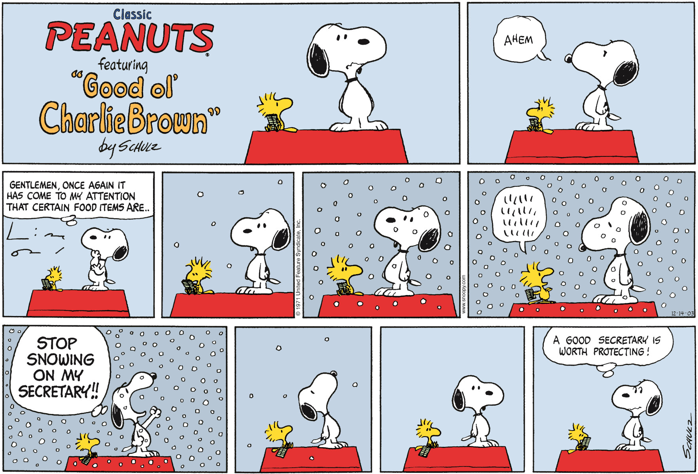

The Peanuts Comic Strips were published in Sunday papers from 1950 unitl the author's death in 2000. This included roughly 17,897 story strips. The comics were published in 2600 newspaper spanning 75 countries and 21 languages. The comics were even adapted into a movie in 2015 called "The Peanuts Movie".
SNOOPY!!!
Although Snoopy can't actually talk readers can still read his thoughts. Because of the situations Snoopy finds himself in, there are dozens of strips where Snoopy makes and appearance doing something random and crazy, as well as whole strips dedicated to stories starring just Snoopy.
Many of Snoopy's stories also feature his best friend and sidekick, Woodstock, a little yellow bird of which his species is unknown. Woodstock first appeared in 1966 but he wouldn't receive his name until 1969. He is named after the famed music festival of the same name that took place in Woodstock, New York 1969. In one of the first comic strips in which he appears, Woodstock explains to Snoopy who is pretending to be The Flying Ace at the time, that he struggles with flying and does not like flying south every winter. The Flying Ace comes to understand that Woodstock is his new personal mechanic for his plane, giving Woodstock his first supporting role as Snoopy's sidekick. He is also Snoopy's secretary when snoopy is pretending to be an author; and Woodstock is also Snoopy's caddy whenever Snoopy goes golfing. Woodstock can technically speak but to the reader his thought bubbles appear as "chicken scratch", Snoopy is the one to translate anything that Woodstock says in the stories.
Snoopy's Alter Egos
- The Flying Ace: a WW1 fighter pilot who had frequent run ins with the Red Baron while flying around on his dog house.
- Joe Cool: a popular college student who somewhat considers himself a ladies" man
- Author: a world famous author who's stories aren't always very good, but always start with "It was a dark and stormy night..."
- Laywer: a world famous lawyer who is known for his love of suing people and doughnuts
- Beagle Scout: a world famous Beagle Scout troop leader. Although the only members of his troop are Woodstock and his friends
Top Snoopy Moments
- Fired bombs on the front lines during D-day (in reality he was just throwing rocks at the front door)
- Snoopy tries to become the first beagle on the moon.
Top Peanuts Moments
- Marvel Crossover: In an extended strip of the comic, Spiderman helped Charlie Brown finally kick a football by catching Lucy in his webs before she has a chance to move the ball away as Charlie is kicking.
- Spike: Snoopy's brother Spike, is seen talking to a cactus where he tells the cactus "If you're going into town, bring me a pizza..." before realizing his mistake; the cactus isn't going to town today and then lets the cactus know to bring him the pizza the next time it goes to town.
- Psychatric help: In the first comic strip featuring Lucy's Phychiatric help booth, Charlie Brown asks Lucy for advice dealing with depression. Lucy proceeds to tell Charlie Brown to "snap out of it" then demands payment for her services.
- Lucy's future marriage: In this comic strip, Lucy talks to Schroeder about her plans for what, according to Lucy, is their future marriage. In the scenario Lucy paints, Schroeder becomes a famous concert pianist and they travel the world together. Then at the height of his career he breaks both arms in a skiing accident forcing Lucy to have to work in a laundry to support them.